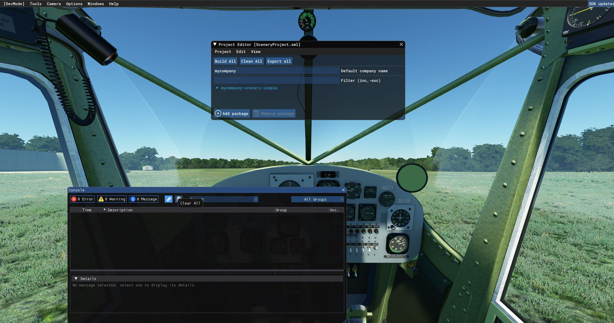
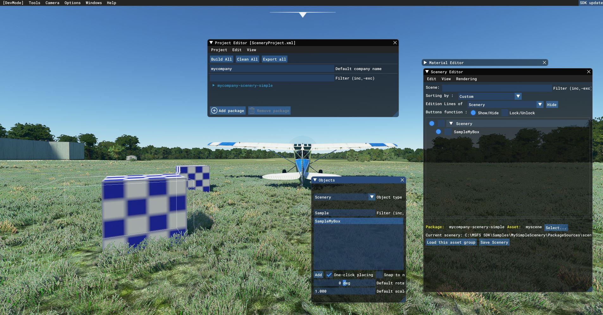
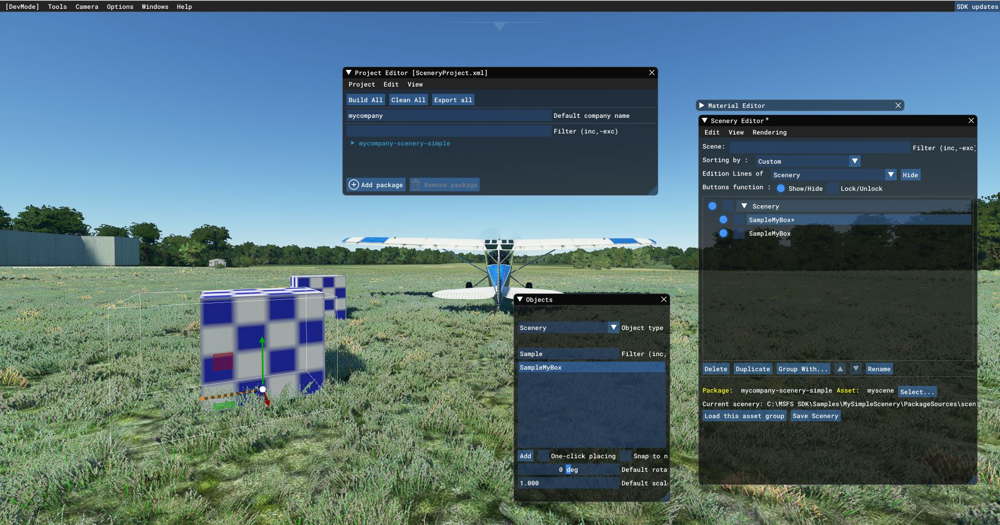

How to open a scenery project and show it
 Now, open the project in MSFS,
Now, open the project in MSFS,

Make sure you open the console,

.. and CLEAR the console,

Then click Project - Build

.. and check the console. If it shows errors, clear it again and Project - Build, the console should have 0 errors.
Then, open the Scenery editor via Menu Tools Scenery Editor,

When it is enabled, click Load this assset group, else use Select to select the Asset.

.. the scenery is now loading.. WAIT for this.. when it is finished, you will see the checkers cube

Now, in the Scenery Editor, select menu View - Objects

Find your object, by typing the name in the search box. Select it. Then check "Click once"

To place an object, left mouse button. Uncheck single click placement. Then click your object.
Using keys W and R you can now move and rotate your object..
